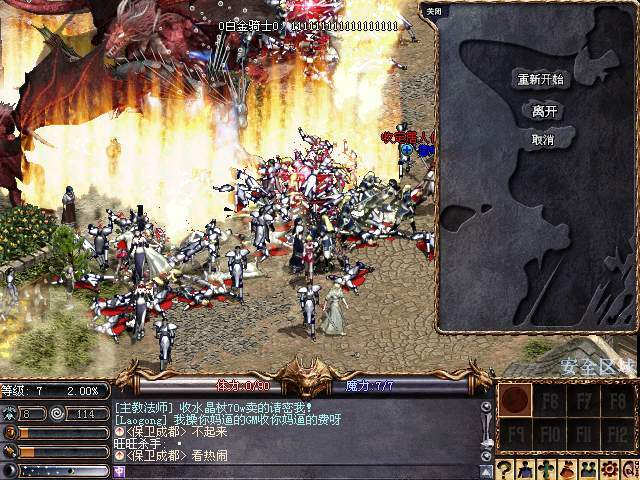

|
2003年4月25日
韓國測試伺服器4月25日更新內容
來源：Lineage Compendium
1. 再次加入/duel（決鬥）的指令，玩家如果想與其他玩家單獨PvP，可以面對他並鍵入/duel的指令，對方可以選擇接受與否。在決鬥中死亡後，是不會掉下道具或變紅的。大家不用按下CTRL也可以直接攻擊。假如在中途傳送，便會落敗。假如不幸戰死，便會掉下經驗值。
2. 在亞丁大陸各村莊（除了燃柳村）的傳送師加入傳送往亞丁城的選項。
3. 修正了其他的臭蟲及文字錯誤。
另外在物件名稱描中亦加入了以下名稱，相信它們亦與新任務有關：
古代君主的鑰匙
古代騎士的鑰匙
古代精靈的鑰匙
古代法師的鑰匙
命運鑰匙
炎魔之創造物
大陸天堂再次出現巨龍屠村
來源：青島之家
4月24日，8點10分，在巴蜀1（7服）出現了火龍巴拉卡斯，水龍法利昂，比上次1服出現的情況還要嚴重的多！！上次就一條火龍，這次在銀騎同時出現了4條火龍，和一條水龍同時屠村。目前服務器正在重起，官方對此事未做任何說明！以下是龍的精彩圖片：


而其後大陸官方發表了是次事件的補償詳情，如下：
各位玩家﹕大家好﹗
首先對4月24日20時左右由於黑客侵入而造成7，8服部份玩家損失的事件深表歉意。
黑客入侵事件發生後公司及時採取了措施，迅速解決了問題。並決定按照游戲記錄，對遭受損失的玩家作出以下的補償﹕
* 經驗值 － 10級以上玩家給予11%的經驗值補償
* 道具 － 所有損失的道具都將被恢復
* 魔法 － 丟失4級以上的魔法的玩家，會把相應的魔法書放到本人的倉庫
恢復需要兩天的時間完成，希望大家給予理解並耐心等候。
再一次向各位蒙受損失的玩家致以深深的歉意，新浪樂谷將竭盡全力抵禦黑客入侵，保證玩家的利益。同時也希望玩家配合我們共同打擊這種惡劣的行為，維護天堂的純潔。
謝謝大家。
日本亞丁攻城前活動 - 出現高等級黑騎士及克特
來源：Minomomi's Lineage，Lineage Reporter Club
日本伺服器在亞丁攻城前一天，遊戲管理者在亞丁城中央召喚了不少黑騎士精銳部隊、黑騎士隊長及克特，而據Lineage Reporter Club的記者經驗，他們的傷害和等級都正常的黑騎士為高，大約每下可損50-60血。Minomomi's Lineage指出他們的等級如下：
黑騎士精銳部隊：36級
黑騎士隊長：41級
克特：46級
另外據美國官方的怪物資料中，反王肯恩（目前770血）和賽尼斯（目前650血）的能力值已經大幅度提高，相信其他地區在更新2.01或2.02版時亦會跟隨，他們的能力值如下：
反王肯恩：75級，-78防，12000HP/150MP，正義值-5
賽尼斯：72級，-72防，6000HP/600MP，正義值-10 |